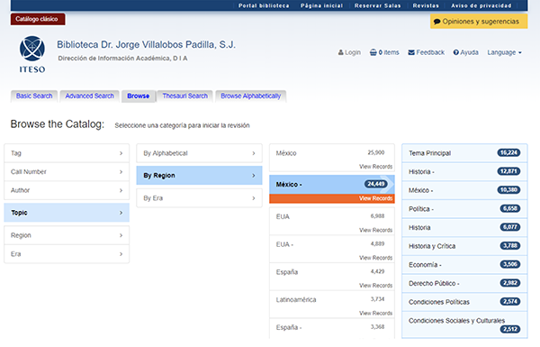

Web Projects Gallery¶
➔ Geomatics¶
Mistletoe-infested trees. Inventory within an urban polygon.
ESRI ArcGIS & ArcGIS StoryMaps.
Guadalajara City Metropolitan Area |
Zapopan Downtown |
|---|---|
Urban Heritage Protection Area |
Study Area Zoom In |


➔ GUI & UX design¶
University Historical Photograph Collection¶
Open Access Initiative, OAI.
ITESO University Academic Repository |
Universities Entrusted to the Society of Jesus In Latin America Repository |
|---|---|
|
|


Library Web portal¶
ITESO University Library Web portal
Drupal


➔ GUI Customization¶
Discovery Search¶
Online Public Access Catalog Discovery Search
Vufind
Home |
Browse |
|---|---|
|
 |

Academic repositories¶
DSpace repositories branding

Thesauri¶
Online Library’s Thesauri
➔ SVG GUI design.¶
Library building floors.
Scalable Vector Graphics (SVG) Interactive Map. ITESO University.
Floor one |
Floor two |
|---|---|
|
|